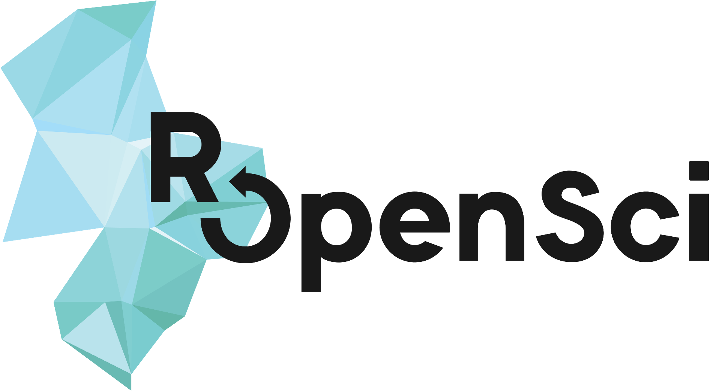

Et à chaque changement de l’outil… on recommence tout !
Et à chaque changement de l’outil… on re-tricote (“knit”) !
Il faut un webdriver et un webdriver client: PhantomJS via webshot, Selenium via RSelenium/seleniumPipes… le paquet webdriver est l’interface du futur ! (https://github.com/rstudio/webdriver)
webshot &co permettent l’interaction avec ou sans JavaScript. Pour bien viser une partie de l’écran, capture d’éléments CSS, ou alors rognage et autres manipulations d’image via magick (https://github.com/ropensci/magick).
magick…).shinytest de RStudio).
R Markdown, et drposter de Ben Bucior (https://github.com/bbucior/drposter). icon (https://github.com/ropenscilabs/icon).GraphViz utilisé via le paquet DiagrammeR de Richard Iannone (http://rich-iannone.github.io/DiagrammeR/).magick via https://ropensci.org/packages !